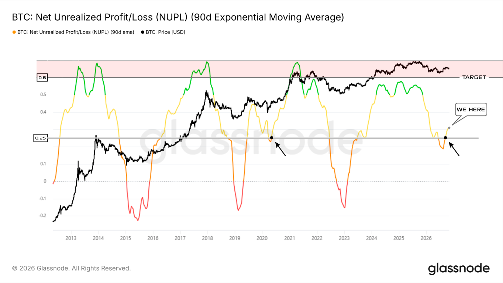

PIFAGOR TRADE math trade
On-Chain Аналитика
NUPL: Хронология цикла
СРЕЗ ДАННЫХ: 07.11.2026
31 января 2025
Исторический High
Начало затяжного снижения метрики NUPL. Точка отсчета для расчета длительности цикла.
18 августа 2026
Формирование Low (564 дня)
Снижение от *High* (31 января 2025) до Low (18 августа 2026) заняло 564 дня. Временные рамки (норма): [ 423 - 631 ] день.
Ожидаемый диапазон завершения: [30 марта - 24 октября 2026]. Снижение приостановилось в этих рамках, затем 2.5 месяца роста. BTC формирует Low первым, NUPL — позже. Снижение завершено, Low сформирован 18.08.2026.
Ожидаемый диапазон завершения: [30 марта - 24 октября 2026]. Снижение приостановилось в этих рамках, затем 2.5 месяца роста. BTC формирует Low первым, NUPL — позже. Снижение завершено, Low сформирован 18.08.2026.

17 сентября 2026
Закрепление выше 0.25
Показатель закрепился выше 0.25. Переход из стадии "Страха" в стадию "Оптимизма".
Ожидаемый диапазон Low-Low: [18 июля - 29 ноября 2026]. Движение заняло 1318 дней (в норме). Запас времени 23 дня. Показатель закрепился выше 0.25. Вывод: Low 2026 истинный. Цель — уровень 0.6.
Ожидаемый диапазон Low-Low: [18 июля - 29 ноября 2026]. Движение заняло 1318 дней (в норме). Запас времени 23 дня. Показатель закрепился выше 0.25. Вывод: Low 2026 истинный. Цель — уровень 0.6.

Текущий момент
Мы находимся здесь (WE HERE)
Рыночная ситуация изменилась в пользу развития восходящего тренда. Преодоление 0.6 (стадия "Веры") станет предвестником кульминационной фазы роста.
